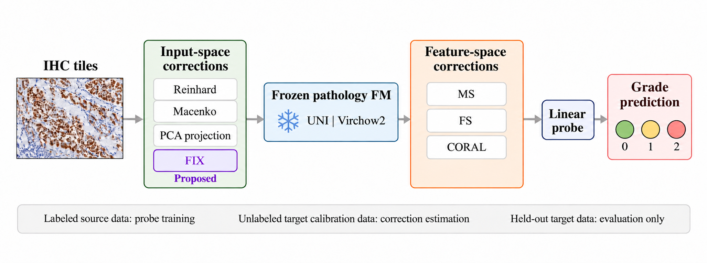
Input- and Feature-Space Correction for Cross-Hospital IHC Grading
Jongwoon Lee, Jhair Gallardo, Christopher Kanan
ASCI Workshop at the Conference on Neural Information Processing Systems (NeurIPS), 2026
Peer-reviewed papers, newest first. See also my Google Scholar profile.

Jongwoon Lee, Jhair Gallardo, Christopher Kanan
ASCI Workshop at the Conference on Neural Information Processing Systems (NeurIPS), 2026
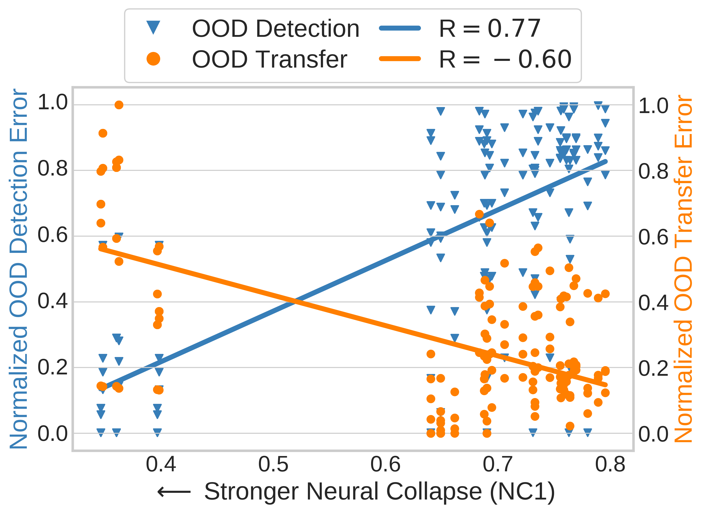
Md Yousuf Harun, Jhair Gallardo, Christopher Kanan
International Conference on Machine Learning (ICML), 2025
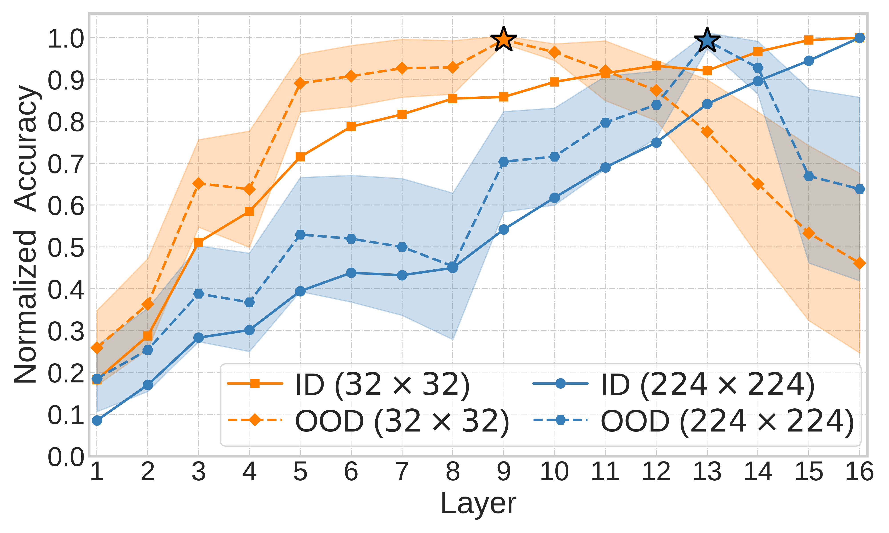
Md Yousuf Harun, Kyungbok Lee, Jhair Gallardo, Giri Krishnan, Christopher Kanan
Conference on Neural Information Processing Systems (NeurIPS), 2024
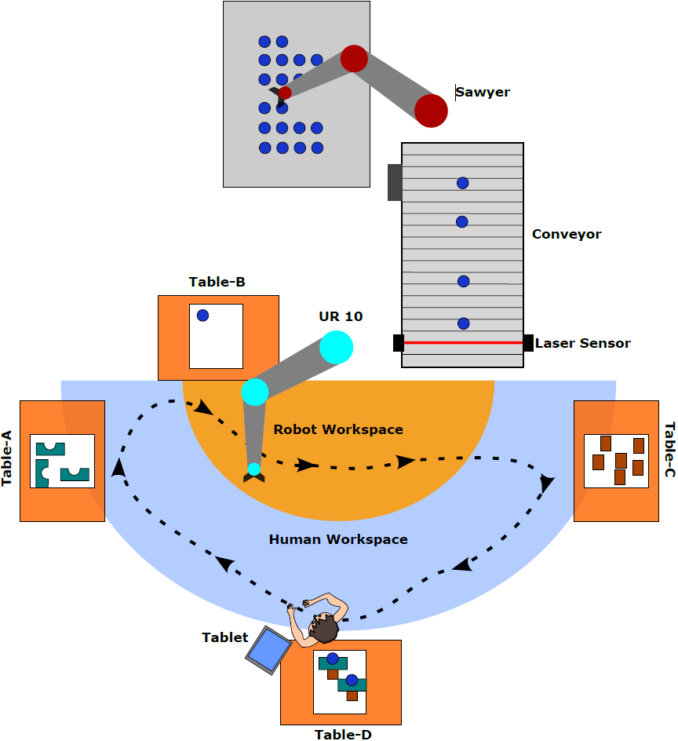
Jhair Gallardo, Celal Savur, Ferat Sahin, Christopher Kanan
System of Systems Engineering Conference (SoSE), 2024
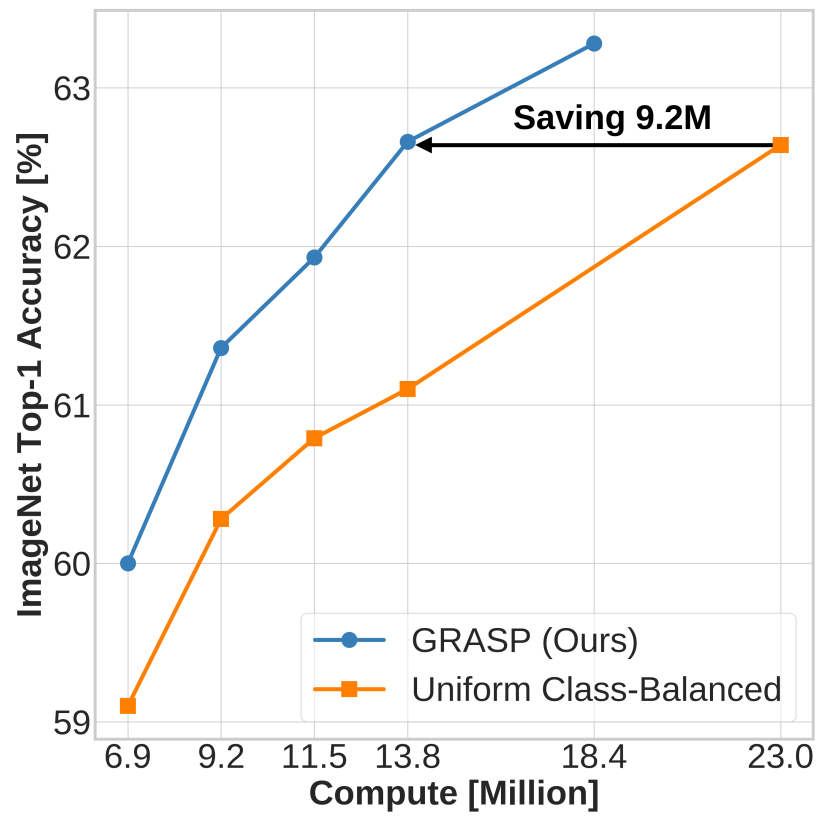
Md Yousuf Harun, Jhair Gallardo, Christopher Kanan
Conference on Lifelong Learning Agents (CoLLAs), 2024
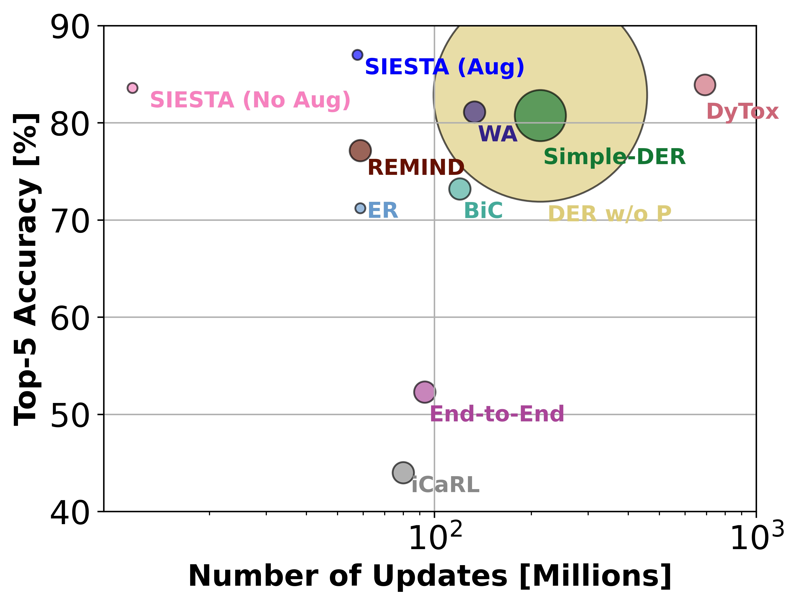
Md Yousuf Harun*, Jhair Gallardo*, Tyler L. Hayes, Ronald Kemker, Christopher Kanan
Transactions on Machine Learning Research (TMLR), 2023. Also presented at the Journal Track of CoLLAs 2024.
* denotes equal contribution.
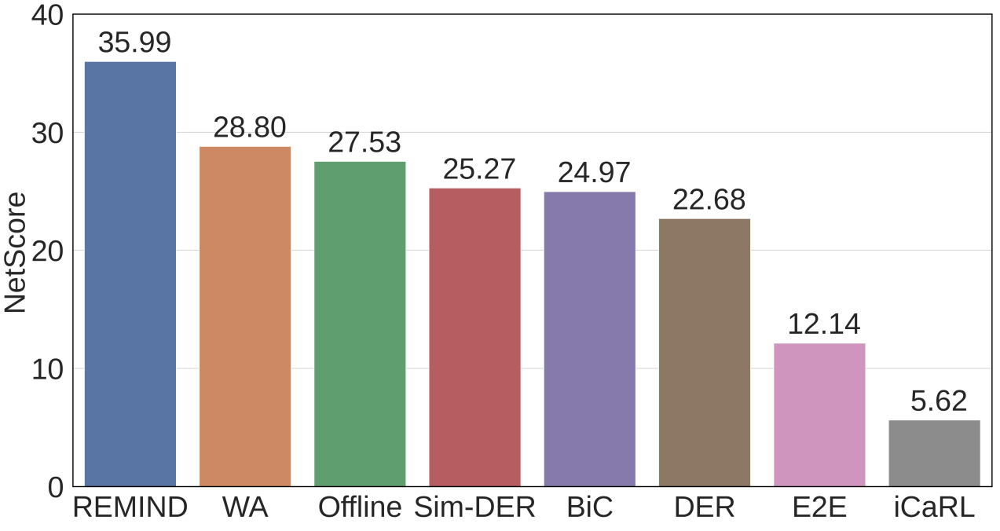
Md Yousuf Harun, Jhair Gallardo, Tyler L. Hayes, Christopher Kanan
CVPR Workshop on Continual Learning in Computer Vision (CLVision), 2023
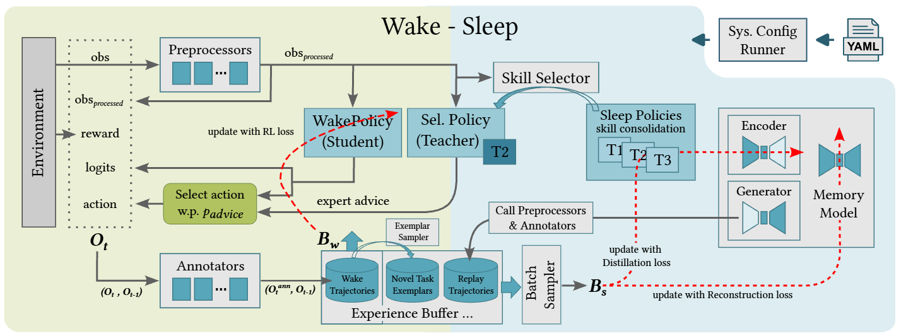
I. Sur, Z. Daniels, A. Rahman, K. Faber, J. Gallardo, T.L. Hayes, C.E. Taylor, M.B. Gurbuz, J. Smith, S. Joshi, N. Japkowicz, M. Baron, Z. Kira, C. Kanan, R. Corizzo, A. Divakaran, M. Piacentino, J. Hostetler, A. Raghavan
International Conference on AI-ML Systems, 2022
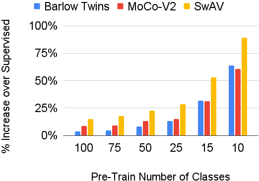
Jhair Gallardo, Tyler L. Hayes, Christopher Kanan
British Machine Vision Conference (BMVC), 2021
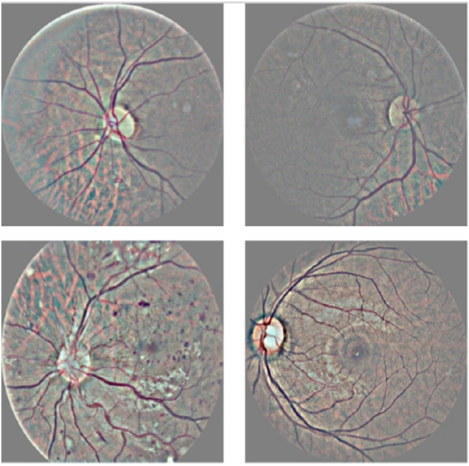
G. Garcia, J. Gallardo, A. Mauricio, J. Lopez, C. del Carpio
International Conference on Artificial Neural Networks (ICANN), 2017
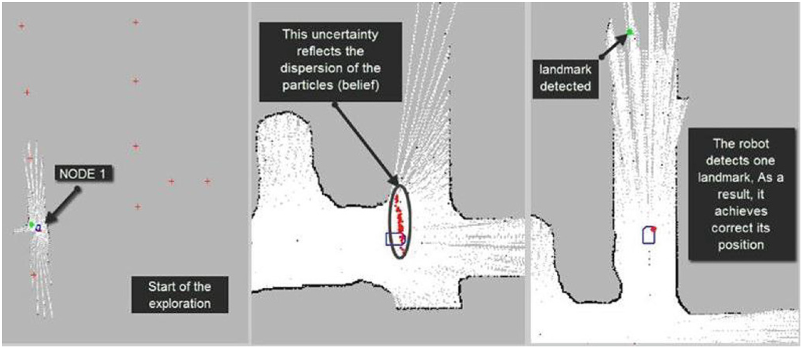
A. Mauricio, A. Nieves, Y. Castillo, K. Hilasaca, C. Fonseca, J. Gallardo, R. Rodriguez, G. Rodriguez
Multibody Systems and Mechatronics (MuSMe), 2014